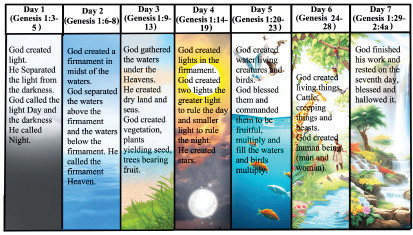

God used His Word to create all plants, animals, and the creatures. He took six days to create all that He wanted and on the seventh day, He rested. Figure 2.1 gives a summary of what God created from day one to seven as presented in Genesis chapter 1.

Use library and online sources on Genesis 1, then explain why do you think it was relevant for God’s creation to be structured in seven days?
Give your opinions.
Light in the spiritual context
Light as presented in the Bible is not only a physical phenomenon but also a powerful symbol of holiness and divine presence. It represents purity, righteousness, and signifies God’s presence and favour (Psalms 27:1; Isaiah 9:2; 2Cor 4:6). It is regarded as a symbol of God’s goodness and protection, enables people to see and understand. It marks the beginning of the day.
Throughout the Old Testament light is regularly associated with God and his word, salvation, goodness, truth, and life.
Use library and Internet sources, then answer the following questions.
1. Why do you think light was created on the first day?
2. Explain five uses of light in our daily life.
3. Give the meaning of light in the spiritual context.